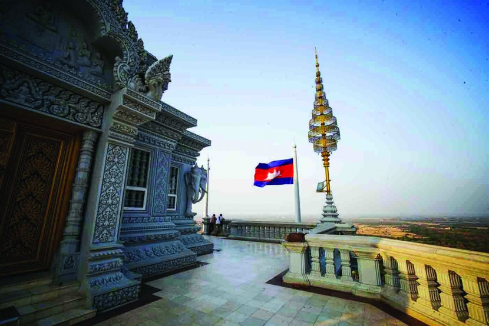

Kandal is a province in central Cambodia that completely surrounds Phnom Penh. It's capital is Ta Khmau, and it contains Udong, the former capital of the country between 1618 and 1866. A number of kings, including King Norodom, were crowned in Udong.
